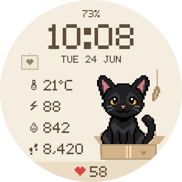

Cardboard Club
Day & lamplightOne perfectly good box, a dangling feather, and nowhere else to be.
A pixel-art watch face for Garmin
Choose a cat and a cozy corner for your wrist. A favorite box, a soft scarf, or a little bed by the lamp.
Find your catIn development for round AMOLED Garmin watches.

Black Shorthair · Cardboard Club · DaySample readings
Twenty coats and breeds, from familiar tabbies to fluffy Maine Coons. Tap a cat to try it on.
A different kind of housemate? Tell me about your cat.
A stitched heart on the wall. A little lamp after dark. Three quiet places to make themselves at home.
One perfectly good box, a dangling feather, and nowhere else to be.
A half-finished scarf, a ball of wool, and a very comfortable interruption.
A soft little bed, a patch of sunshine, and the warm glow of a familiar lamp.
Touch and hold your cat on a touchscreen watch to turn on the lamplight. Or switch day and night in Connect IQ settings.
Time, date, battery, and heart rate stay close by. Choose what the other four rows show, or leave a little more room.
PixelMew is built for supported round AMOLED Garmin watches, including models in the Forerunner, Venu, epix, fēnix, and vívoactive families. MIP displays aren’t supported. Send me your model and I’ll check it.
Yes. All twenty cats can settle into Cardboard Club, Loose Stitch, or Nightlight. Each theme has a day and night version, giving you 120 combinations.
The palette deepens, the little lamp comes on, and two small stars appear with a few flecks in the light. Your cat, their favorite spot, and the stitched heart stay put. Light themes have a feather toy, a loose thread, or sunshine in the lamp’s corner.
After installation, open PixelMew in the Connect IQ app and go to Settings. Choose your cat, theme, day or night mode, and the readings for your four configurable rows.
The low-power display shows a simple white clock on black. Wake your watch to bring back your cat, their room, and your stats. Display behavior also depends on your Garmin’s settings.
PixelMew uses the data available from your watch. Temperature follows your °C/°F setting; distance follows km/miles. Missing readings show a dash. Calories can show your device’s daily total or an estimate of active calories.
PixelMew is in development. You can try every cat and theme on this page, and get in touch with questions or a cat request.
I’m Danijel, the developer behind PixelMew. Send me a cat request, a photo of your little companion, or a question about the watch face.